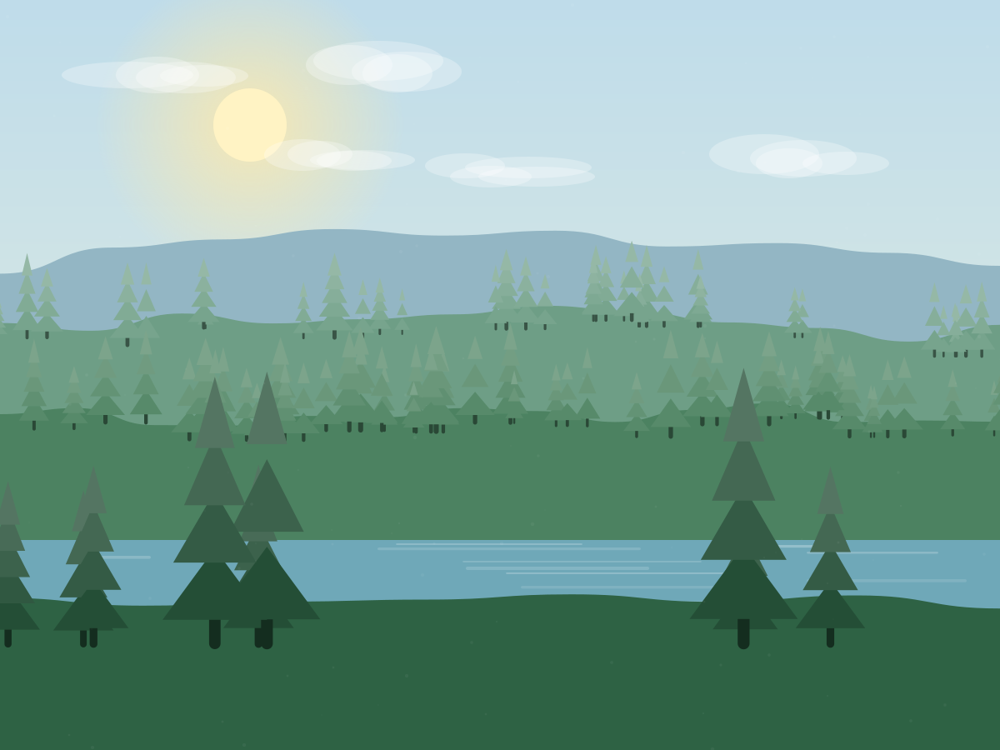

Media card
Image, gradient scrim, copy pinned to the bottom.
Hover reveals a second line of detail.
Four rules that settle most design arguments before they start.
Every animation, gradient and illustration has to do a job — direct attention, show state, or explain a process. Ornament that does none of those gets cut.
Body text never falls below 16px or 4.5:1 contrast. If a design choice fights readability, readability wins.
No page-specific stylesheets. If a page needs something new, it becomes a component here first.
Data components are built to show shortfalls as clearly as successes. A progress meter at 40% must look like 40%.
Three families: forest greens carry the brand, lime is the single accent reserved for action, and warm sands hold the page together. Clay appears only to represent degraded land.
Components only ever reference these. Swapping the theme redefines the semantic layer, never the components.
A single system sans for interface and headlines, an old-style serif reserved for quotations, and a mono for data. The scale is fluid: every step is a clamp(), so nothing needs a breakpoint.
--step-6 · display · 3–6rem · -0.04em
Grow forests
--step-5 · h1 · 2.5–4.4rem
A farm that pays for a forest
--step-4 · h2 · 2.05–3.2rem
Numbers we will defend
--step-2 · h3 · 1.38–1.75rem
Native woodland
--step-1 · lead · 1.15–1.35rem · 1.5
Every vegetable box we sell funds native woodland, planted by hand and monitored for three years.
--step-0 · body · 0.98–1.06rem · 1.62
Most reforestation is funded by people a long way from the land. We do it the other way round: the farm earns, the woodland grows, and the people who plant it live twenty minutes away.
--font-serif · quotations only
A hedge takes seven years to be worth looking at and thirty to be worth counting.
--font-mono · data, labels, years
2016 · 412,000 trees · 94% survival · £3.00 per tree
Spacing runs on a 4px base with a soft exponential curve. Section rhythm is fluid between 3.5rem and 7.5rem.
--sp-2 · 8px
--sp-4 · 16px
--sp-6 · 32px
--sp-8 · 64px
--r-sm · 10px
--r-md · 16px
--r-lg · 24px
--r-2xl · 44px
Five shadows, all tinted green rather than grey, so cards feel lit by daylight rather than a spotlight. Depth increases with interactivity, never with importance.
--shadow-sm
Resting inputs, sticky header
--shadow-md
Buttons on hover
--shadow-lg
Cards on hover, hero shell
--shadow-xl
Toasts, floating panels
One family: 24×24 grid, 1.75px stroke, round caps and joins, no fills. Icons inherit currentColor so they work in every theme without a second asset.
leaf
sprout
tree
drop
users
shield
chart
target
recycle
calendar
map
hand-coins
tools/gen_art.py) — no photography, no external image hosts, and every scene re-renders from the same palette tokens.Primary for the single most important action per view. Accent (lime) is reserved for giving. Never two primaries side by side.
Surface, border, 24px radius. Lifts 6px on hover.
For supporting content inside a section.
One per page maximum. Always tied to giving.

Image, gradient scrim, copy pinned to the bottom.
Hover reveals a second line of detail.
Progress meters animate once, on entering the viewport, and always show the real figure — including when it is bad.
Panels animate with grid-template-rows: 0fr → 1fr, which keeps the transition smooth without measuring heights in JavaScript. The trigger is a real button with aria-expanded.
Add data-accordion-single to close the others when one opens.
Tabs are keyboard-navigable with left and right arrows, and roving tabindex.
Panels fade and rise 18px when they become visible.
Only one panel is in the accessibility tree at a time — the rest use the hidden attribute.
Every form on the site runs through one handler: validate on blur, describe errors in words, never rely on colour alone, and confirm success politely. Add data-capture="type" to a form and it is wired up.
Hints sit below the control.
Enter a valid email address, e.g. name@example.com
Submissions are validated, stored in localStorage and replayed on the confirmation page. Set Rootstock.Forms.config.endpoint to POST them to a real collector instead — no markup changes.
Motion explains change: where something came from, that it responds to you, or that it has left. Five durations, four easings, and one absolute rule — all of it disappears under prefers-reduced-motion.
Durations
--dur-1 160ms · state change
--dur-2 280ms · hover, buttons
--dur-3 450ms · panels, cards
--dur-4 700ms · entrances
--dur-5 1.1s · headline wipes, image zoom
Easings
--ease-out · general interface
--ease-expo · entrances, long travel
--ease-spring · anything that should feel alive
--ease-in-out · looping ambient motion
Set with data-reveal. Scroll this section out of view and back to replay them.
data-reveal
Rise 28px + fade
"fade"
Opacity only
"left"
Slide from the left
"right"
Slide from the right
"zoom"
Scale from 0.94
"blur"
Defocus to sharp
Pointer-tracked 3D tilt on cards. data-tilt
Buttons drift toward the cursor. data-magnetic
With data-reveal-exit, elements soften to 12% opacity as they leave the top of the viewport.
| Rule | Standard applied |
|---|---|
| Text contrast | 4.5:1 minimum, both themes; large text 3:1 |
| Focus | 2px solid brand outline, 3px offset, never removed |
| Touch targets | 44×44px minimum on interactive controls |
| Motion | Fully disabled under prefers-reduced-motion |
| Forms | Real labels, text errors, aria-invalid, polite status region |
| Landmarks | One main, labelled navs, skip link on every page |
| Images | Meaningful alt text; decorative art marked aria-hidden |
| Keyboard | Tabs, accordions, drawer and carousel all operable |
The public commitment version of this table lives on the accessibility statement, including what still needs work.
The whole site is three files plus content. There is no framework and no build step for the CSS or JavaScript.
assets/css/style.css | Tokens, components, motion. The only stylesheet. |
|---|---|
assets/js/site.js | Theme, nav, reveals, counters, tabs, accordions, carousel, parallax. |
assets/js/forms.js | Validation, capture, donation calculator, confirmation page. |
tools/build.py | Wraps src/*.html fragments in the shared header and footer. |
tools/gen_art.py | Regenerates every illustration from the palette. |